geom_boxplot
Box and whiskers plot
Details
Aesthetics
The following aesthetics can be used with geom_boxplot. They are listed along with their default value. All geoms and scales can also use the group aesthetic. Read how this important aesthetic works in scale_group. Typically, you will associate an aesthetic with a variable in your data set. To do this, you use the aes function: geom_boxplot(aes(x = var)). Scales control the details of the mapping between data and aesthetic properties; after each aesthetic are listed scales that can be used with that aesthetic. The scale documentation will also provide references to help you interpret the default values.
Instead of mapping an aesthetic to a variable in your dataset, you can also set it to a fixed value. See the parameters section for details.
weight:
1colour:
grey50(scales: brewer, gradient, gradient2, hue, manual)fill:
white(scales: brewer, gradient, gradient2, hue, manual)size:
1(scales: area, manual, size, size_discrete)
Parameters
When an aesthetic is used an a parameter, like geom_boxplot(weight = 3), it will override mappings from data.
weight, observation weight used in statistical transformationcolour, border colourfill, internal coloursize, sizeshape, shape of point
Default statistic
stat_boxplot. Override with the stat argument: geom_boxplot(stat="identity")
Default position
position_dodge. Override with the position argument: geom_boxplot(position="jitter").
See also
- stat_quantile: View quantiles conditioned on a continuous variable
- geom_jitter: Another way to look at conditional distributions
Examples
> p <- ggplot(mtcars, aes(y=mpg, x=factor(cyl))) > > p + geom_boxplot() 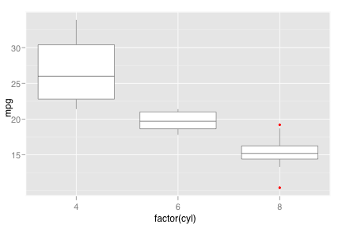 > p + stat_boxplot()> p + geom_boxplot() + geom_jitter() 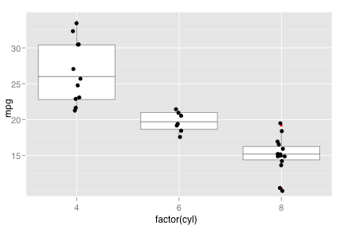 > p + geom_boxplot() + coord_flip() 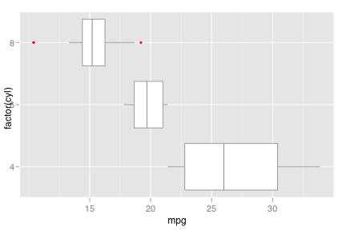 > > # Add aesthetic mappings > p + geom_boxplot(aes(fill=cyl)) 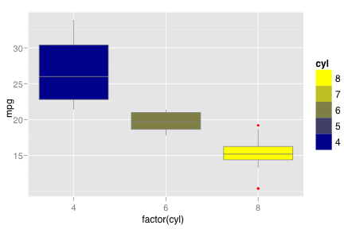 > p + geom_boxplot(aes(fill=factor(cyl))) 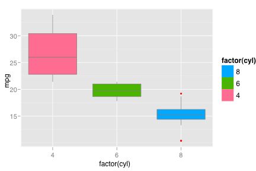 > p + geom_boxplot(aes(colour=cyl), size=2) 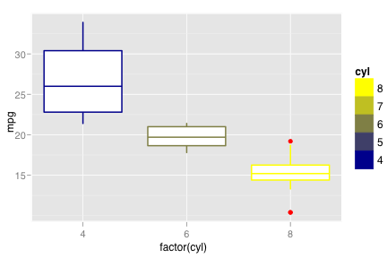 > > # Dodged boxplots > # - automatically split when an aesthetic variable is a factor > p + geom_boxplot(aes(colour=factor(am))) 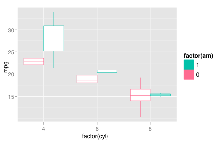 > p + geom_boxplot(aes(fill=factor(vs)), colour="black") 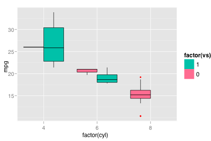 > p + geom_boxplot(aes(size=factor(gear))) 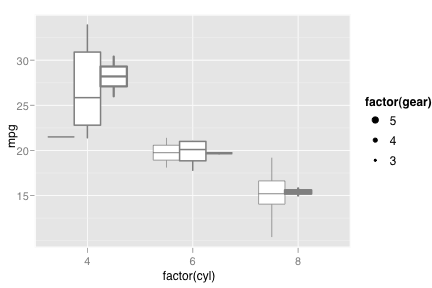 > > # Set aesthetics to fixed value > p + geom_boxplot(fill="black", colour="white", size=2) 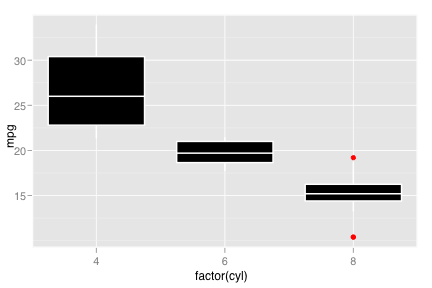 > > # Scales vs. Coordinate transforms > movies$ratingr <- factor(round_any(movies$rating,0.5)) > m <- ggplot(movies, aes(y=votes, x=ratingr)) > m + geom_point() 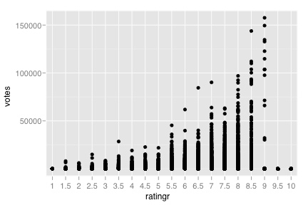 > m + geom_boxplot() 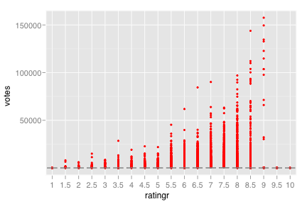 > m + geom_boxplot() + scale_y_log10() 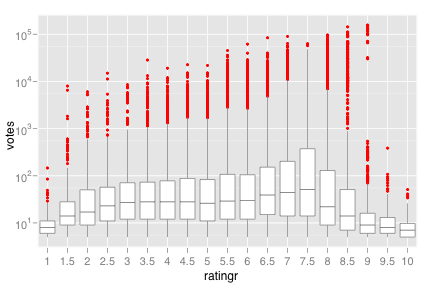 > m + geom_boxplot() + coord_trans(y="log10") 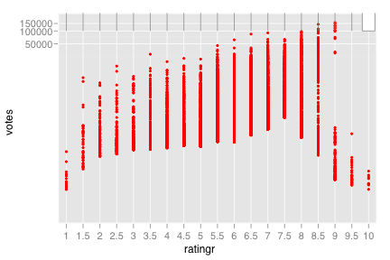 > m + geom_boxplot() + scale_y_log10() + coord_trans(y="log10") 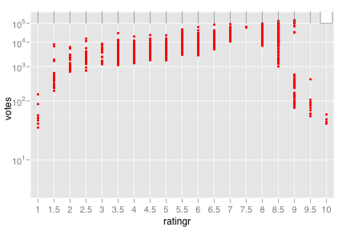 > > # Use qplot instead > qplot(factor(cyl), mpg, data=mtcars, geom="boxplot") > qplot(factor(cyl), mpg, data=mtcars, geom="boxplot") + coord_flip()